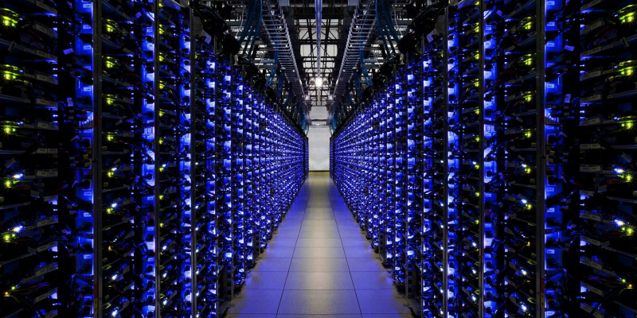
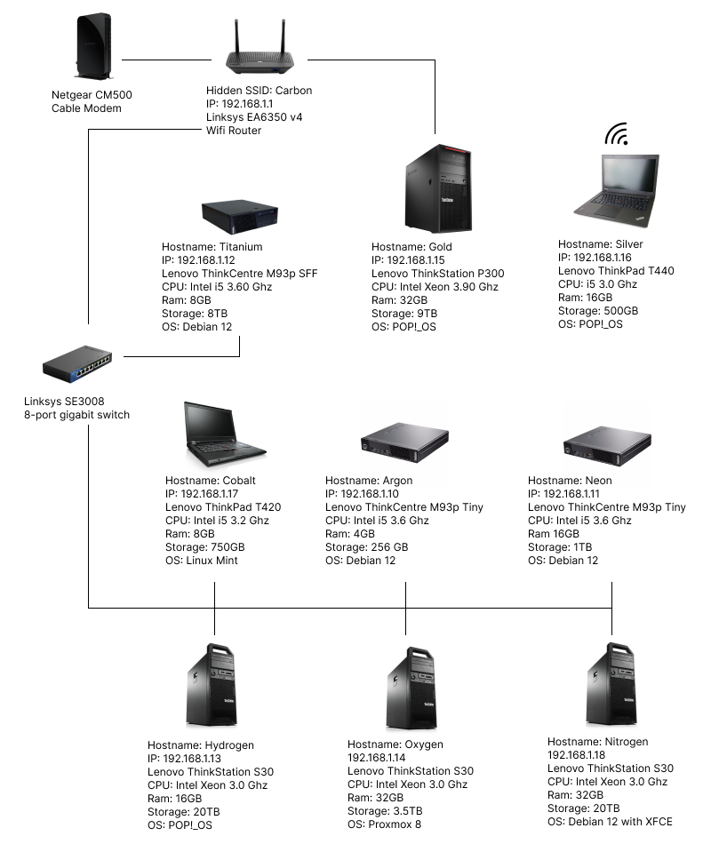

Homelab Refresh
2024-03-06

How it Started
Last month I was working on a design project and wanted to use a specific file I remembered saving. I thought it was on my small NAS. But I didn't find it there. So I checked my large NAS and after a long search, I finally found it.
During my hunt, I saw many duplicate files across different folders. The disorganization and wasted space bothered me.
At the same time, one of my media server drives was getting full. I had another unused drive sitting in a different tower. I decided it was time to reorganize my files and refresh my servers to better utilize their resources.
It took a week for me to sort through 8TB of data. I deleted duplicate files and software I no longer needed.
Software and Services
I took an inventory of the current state of my homelab and noticed some of my systems were still running slightly older versions of Ubuntu Server. I decided I wanted to use Debian 12 without a GUI as a server OS. Ubuntu Server is based on Debian. It is designed to be run in a data center on enterprise hardware. It adds a lot of features I don't use which can slow down a home server.
In my opinion, Debian is easier to install, configure, and maintain. I planned on installing CasaOS, on top of Debian, to create and manage docker continers. After testing CasaOS with both Ubuntu Server and Debian on my hardware, I found Debian runs faster and uses less power.
A few years ago I set up a Jellyfin media server using POP!_OS because some configuration and management tasks are easier to do with a GUI. So, I decided not to change it during the refresh. Instead, I updated it to the latest version and cleaned up the files.
Website Hosting
While CasaOS does have the ability to install docker containers that can host websites. There are many reasons I decided against doing this.
- High electricity cost in my area.
- My internet connection is unreliable which would interrupt access to my websites.
- Thunderstorms in the spring and summer could damage running hardware.
- Internet service providers frown on using residential internet for hosting websites.
- Residential IP addresses change frequently which would break the DNS look for my domain.
- Opening ports in my router to allow web traffic is a security risk for my entire network.
Instead, I use the Eleventy Static Site Generator to create a static version for both of my websites locally. Then I host them on GitHub Pages for free. Doing this eliminates all the problems mentioned above.
Names and Static IPs
Originally, I used the Greek Gods and Goddesses as a naming convention for all my systems. During this refresh, I decided to change the naming convention to the periodic table of elements because I'm a science nerd!
I reconfigured the storage across my systems and installed Debian as the server OS on most of them. Then I setup static IP addresses outside my router's DHCP range. I did this to ensure the static IP addresses wouldn't interfere with any dynamic addresses it might assign to other devices.
Hardware and network map

Above is a graphic that shows all my hardware and a map of how they are connected within my network. None of the information in this map will compromise my network security. I'm sharing it to illustrate the amount of work I put into refreshing my homelab.
Below is a list of each system in IP order with a description of its function.
- 10 Argon - Gitea hosts git repositories for projects.
- 11 Neon - Crafty Controller is a GUI for managing Minecraft servers.
- 12 Titanium - Debian with a Samba shared folder. This is my small NAS.
- 13 Hydrogen - Jellyfin media server.
- 14 Oxygen - Proxmox hypervisor that hosts virtual operating systems.
- 15 Gold - Main desktop workstation.
- 16 Silver - Personal Laptop.
- 17 Cobalt - Laptop used for secure downloads.
- 18 Nitrogen - Debian with XFCE Desktop. This is my large NAS.
Results
I'm happy now that everything is in its right place. I can easily access my servers to find files or use services.
Due to the high electricity cost in my area I keep my computers turned off unless I'm using them.
To make my life easier I wrote out all the steps I took to install, setup, and configure the operating systems, software, and services I use in my homelab: Homelab Repo.
In a few months if I decide to add or update anything I can reference my documentation.
Running a homelab is a fun hobby. If you're interested in setting up a homelab, I recommend checking out DB Tech's CasaOS Playlist on YouTube.